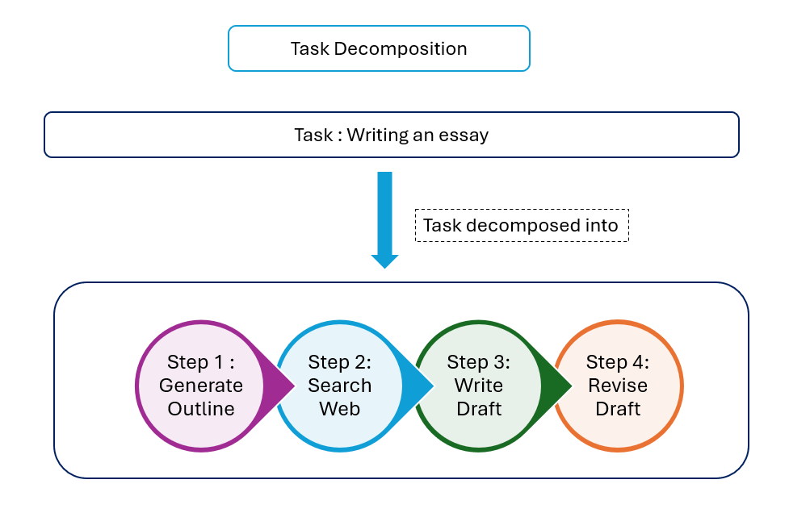

Module 1 — Episode 1
Training:Agentic AI Training
🎯 Learning Objectives
By the end of this episode, you will be able to:
- ✅ Break down complex human or business tasks into discrete, automatable steps.
- ✅ Identify which steps can be implemented using LLMs, APIs, or other tools.
- ✅ Iteratively refine and improve task decompositions for better workflow performance.
🧭 Overview
This episode introduces task decomposition, a core skill for designing agentic workflows.
You’ll learn how to analyze a complex task—like research, customer support, or invoice processing—and break it into smaller, automatable steps.
Understanding this process helps developers design modular, flexible workflows where each step can be handled by a language model, a function, or an external API.
🧱 Prerequisites
Readers should already understand:
- Basic concepts of Large Language Models (LLMs) and their capabilities.
- How agentic workflows use LLMs and tools to perform multi-step tasks.
- Familiarity with API calls and function-based automation.
🔑 Core Concepts
- Task Decomposition – The process of breaking a complex goal into smaller, manageable steps that can be automated or executed by individual agents.
- Agentic Workflow – A sequence of coordinated steps performed by an AI agent using reasoning, tool use, and iteration.
- Building Blocks – The components (LLMs, APIs, code execution tools, retrieval systems) that can be combined to construct an agentic workflow.
- Iterative Refinement – The practice of testing and improving a workflow by analyzing its outputs and decomposing weak steps further.
🖼 Visual Explanation
 Caption:This diagram depicts task decomposition for an agentic workflow as a hierarchical tree, showing how complex tasks like "Write Research Essay" decompose into automatable steps such as outline generation, web search, drafting, and revision.
⚙️ Technical Breakdown
How It Works
1. Start with a high-level task — e.g., “Write an essay on topic X.”
2. Identify natural substeps — such as “Create outline,” “Search for references,” “Write essay.”
3. Evaluate each substep — Determine if it can be handled by:
- A Large Language Model (for reasoning or text generation)
- A Tool or API (for data retrieval, email sending, or database queries)
- A Function call or code snippet (for computation or transformation)
4. Iterate — If a step produces weak or inconsistent results, decompose it further (e.g., “Write essay” → “Draft essay,” “Critique draft,” “Revise essay”).
5. Assemble — Combine the atomic steps into an executable workflow graph or sequence.
Why It Works
Breaking tasks into smaller steps aligns with how humans naturally reason and work.
By isolating atomic operations, each step can be optimized independently, and the overall workflow becomes more reliable.
This modularity also allows for easier debugging, substitution (e.g., swapping tools), and scaling.
When To Use It
✅ Ideal Scenarios- Designing multi-step AI workflows (e.g., research assistants, customer support bots).
- Automating repetitive human processes.
- Improving the quality or depth of LLM outputs by structuring reasoning.
- The task is trivially solvable in one prompt (e.g., simple text generation).
- The workflow overhead exceeds the task’s complexity.
Trade-offs & Limitations
- Complexity Overhead: Too many steps can make workflows hard to maintain.
- Latency: Multi-step workflows may be slower due to multiple API calls.
- Error Propagation: Mistakes in early steps can cascade downstream.
- Evaluation Burden: Requires systematic testing and iteration to achieve quality.
Performance Considerations
- Caching intermediate results can reduce redundant calls.
- Parallelizing independent steps improves throughput.
- Monitoring step-level metrics helps identify weak links in the workflow.
- Incremental refinement (e.g., breaking down only problematic steps) balances performance with accuracy.
💻 Code Examples
Minimal Example: Essay Generation Workflow
from langchain import LLMChain, OpenAI, Tool
# Step 1: Generate outline
outline_chain = LLMChain(
llm=OpenAI(),
prompt="Generate an essay outline on the topic: {topic}"
)
# Step 2: Search the web
def web_search(query):
# Example placeholder for a search API
return ["Result 1", "Result 2"]
# Step 3: Write essay based on search results
essay_chain = LLMChain(
llm=OpenAI(),
prompt="Using the following search results, write a detailed essay:\n{search_results}"
)
def generate_essay(topic):
outline = outline_chain.run(topic=topic)
search_results = web_search(outline)
essay = essay_chain.run(search_results=search_results)
return essay
print(generate_essay("The impact of renewable energy adoption"))
Iterative Refinement Example
# Step 4: Critique and revise essay
critique_chain = LLMChain(
llm=OpenAI(),
prompt="Critique the following essay for coherence and depth:\n{essay}"
)
revise_chain = LLMChain(
llm=OpenAI(),
prompt="Revise the essay based on this critique:\nEssay: {essay}\nCritique: {critique}"
)
def improve_essay(essay):
critique = critique_chain.run(essay=essay)
revised = revise_chain.run(essay=essay, critique=critique)
return revised
🧩 Real-World Examples
- Research Agent: Outline → Search → Write → Critique → Revise
- Customer Support Agent: Extract Info → Query Database → Compose Reply
- Invoice Processor: Extract Fields → Validate → Update Database
Each example shows how a complex human workflow can be decomposed into automatable, tool-augmented steps.
🧠 Key Takeaways
- Task decomposition is the foundation of building robust agentic workflows.
- Each step should be atomic, automatable, and testable.
- Iteration and evaluation are essential for improving workflow quality.
- Understanding available building blocks (LLMs, APIs, code execution) enables creative and effective automation design.
🚀 Next Episode
In the next episode, we’ll explore evaluations (evals) — how to measure, test, and iteratively improve the performance of your agentic workflows.